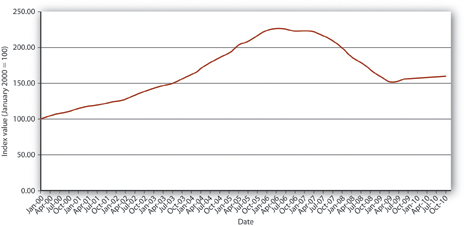
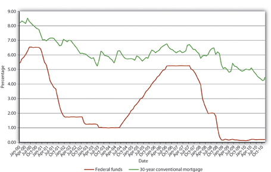
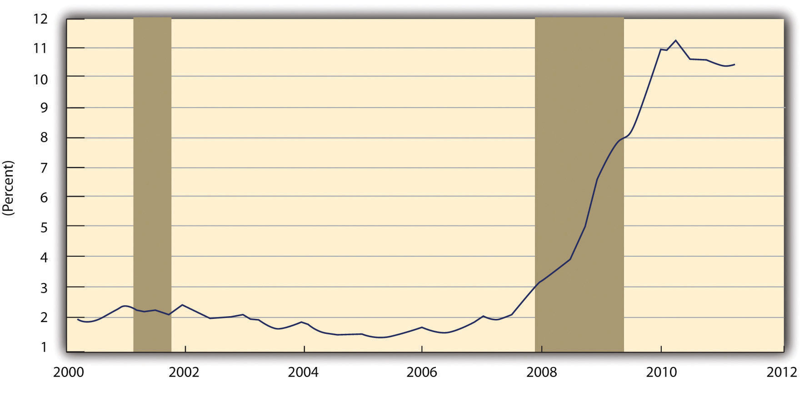
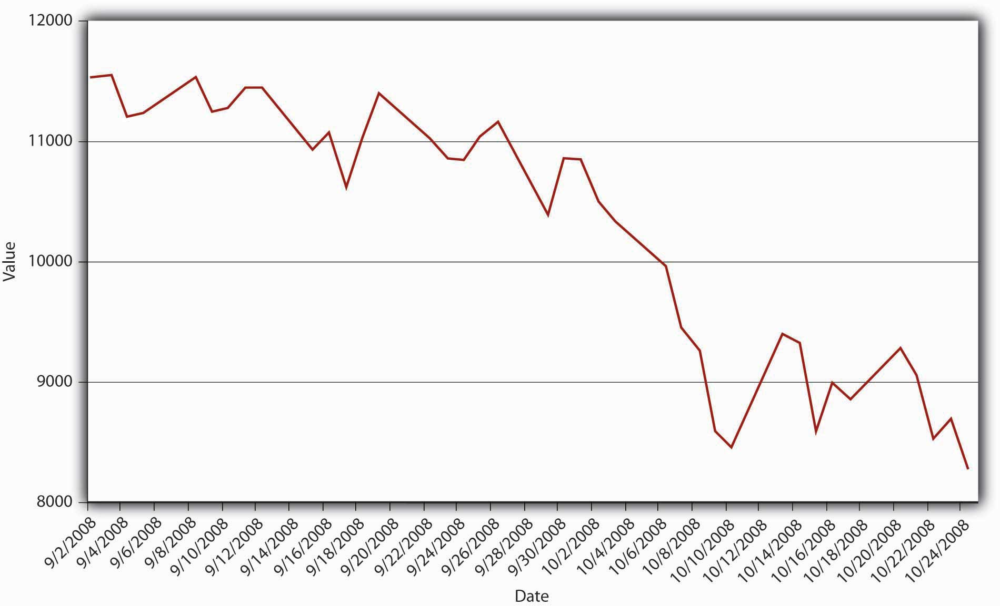
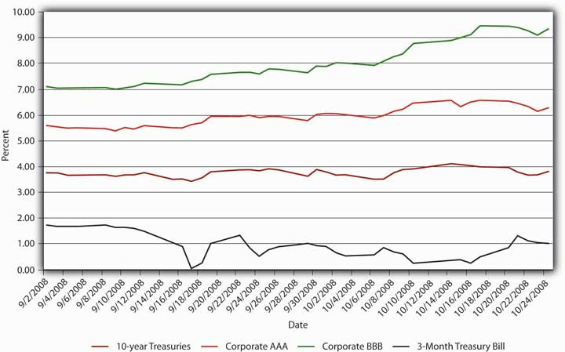

The most recent financial crisis began in 2007 as a nonsystemic crisis linked to subprime mortgagesLoans to risky borrowers collateralized with real estate, usually primary residences but sometimes vacation homes., or risky loans to homeowners. In 2008, the failure of several major financial services companies turned it into the most severe systemic crisis in the United States since the Great Depression.
The troubles began with a major housing asset bubble. As shown in Figure 13.4 "Case-Shiller U.S. Home Price Composite Index, 2000–2010", between January 2000 and 2006, a major index of housing prices in the United States more than doubled. (Prices went up more in some areas than in others because real estate is a local asset.) Home prices rose rapidly for several reasons. As shown in Figure 13.5 "U.S. interest rates, 2000–2010", mortgage rates were quite low, to a large extent because the Federal Reserve kept the federal funds rate, the rate at which banks lend to each other overnight, very low.
Figure 13.4 Case-Shiller U.S. Home Price Composite Index, 2000–2010
Figure 13.5 U.S. interest rates, 2000–2010
Mortgages also became much easier to obtain. Traditionally, mortgage lenders held mortgage loans on their own balance sheets. If a homeowner defaulted, the lender, usually a bank or life insurance company, suffered the loss. They were therefore understandably cautious about whom they lent to and on what terms. To shield themselves from loss, lenders insisted that borrowers contribute a substantial percentage of the home’s value as a down payment. The down payment ensured that the borrower had some equity at stake, some reason to work hard and not to default. It also provided lenders with a buffer if housing prices declined. Traditionally, lenders also verified that borrowers were employed or had other means of income from investments or other sources.
All that changed with the widespread advent of securitization, the practice of bundling and selling mortgages to institutional investors. Banks also began to “financial engineerA person who engages in financial engineering, the process of creating new, hopefully improved, financial products by redesigning or repackaging existing financial instruments.” those bundles, called mortgage-backed securitiesA bundle of home mortgages. (MBSs), into more complex derivative instruments like collateralized mortgage obligationsA type of derivative formed by financial engineering mortgage-backed securities into tranches with different risk-return characteristics. (CMOs). MBSs afforded investors the portfolio diversification benefits of holding a large number of mortgages; CMOs allowed investors to pick the risk-return profile they desired. They did so by slicing a group of MBSs into derivative securities (aka tranchesFrench for “slice.” Part of a structured finance instrument such as a collateralized mortgage obligation.) with credit ratings ranging from AAA, which would be the last to suffer losses, to BBB, which would suffer from the first defaults. The AAA tranches, of course, enjoyed a higher price (lower yield) than the lower-rated tranches. The holders of the lowest-rated tranches, those who took on the most risks, suffered most during the subprime maelstrom.
Securitization allowed mortgage lenders to specialize in making loans, turning them more into originators than lenders. Origination was much easier than lending because it required little or no capital. Unsurprisingly, a large number of new mortgage originators, most mere brokers, appeared on the scene. Paid a commission at closing, originators had little incentive to screen good borrowers from bad and much more incentive to sign up anyone with a pulse. A race to the bottom occurred as originators competed for business by reducing screening and other credit standards. At the height of the bubble, loans to no income, no job or assets (NINJA) borrowers were common. So-called liars’ loans for hundreds of thousands of dollars were made to borrowers without documenting their income or assets. Instead of insisting on a substantial down payment, many originators cajoled homeowners into borrowing 125 percent of the value of the home because it increased their commissions. They also aggressively pushed adjustable rate mortgages (ARMs) that offered low initial teaser rates and later were reset at much higher levels.
Regulators allowed, and even condoned, such practices in the name of affordable housing, even though six earlier U.S. mortgage securitization schemes had ended badly.Kenneth Snowden, “Mortgage Securitization in the United States: Twentieth Century Developments in Historical Perspective,” in Michael Bordo and Richard Sylla, eds., Anglo-American Financial Systems: Institutions and Markets in the Twentieth Century (Burr Ridge, IL: Irwin Professional Publishing, 1995), 261–298. Regulators also allowed Fannie Mae and Freddie Mac, two giant stockholder-owned mortgage securitization companies whose debt was effectively guaranteed by the federal government, to take on excessive risks and leverage themselves to the hilt. They also allowed credit-rating agencies to give investment-grade ratings to complicated mortgage-backed securities of dubious quality.
Observers, including Yale’s Robert Shillerwww.econ.yale.edu/~shiller and Stern’s Nouriel Roubini,pages.stern.nyu.edu/~nroubini warned about the impending crisis, but few listened. As long as housing prices kept rising, shoddy underwriting, weak regulatory oversight, and overrated securities were not problems because borrowers who got into trouble could easily refinance or sell the house for a profit. Indeed, many people began to purchase houses with the intention of “flipping” them a month later for a quick buck.
In June 2006, however, housing prices peaked, and by the end of that year it was clear that the bubble had gone bye-bye. By summer 2007, prices were falling quickly. Defaults mounted as the sale/refinance option disappeared, and borrowers wondered why they should continue paying a $300,000 mortgage on a house worth only $250,000, especially at a time when a nasty increase in fuel costs and a minor bout of inflation strained personal budgets. Highly leveraged subprime mortgage lenders, like Countrywide and Indymac, suffered large enough losses to erode their narrow base of equity capital, necessitating their bankruptcy or sale to stronger entities. By early 2008, investment bank Bear Stearns, which was deeply involved in subprime securitization products, teetered on the edge of bankruptcy before being purchased by J. P. Morgan for a mere $10 per share.
Figure 13.6 Delinquency rate on residential mortgages, 2000–2011
Shaded areas indicate U.S. recessions.
Source: Board of Governors of the Federal Reserve System. 2011 research.stlouisfed.org.
As the crisis worsened, becoming more systemic in nature as asymmetric information intensified, the Federal Reserve responded as a lender of last resort by cutting its federal funds target from about 5 to less than 2 percent between August 2007 and August 2008. It also made massive loans directly to distressed financial institutions. Mortgage rates decreased from a high of 6.7 percent in July 2007 to 5.76 percent in January 2008, but later rebounded to almost 6.5 percent in August 2008. Moreover, housing prices continued to slide, from an index score of 216 in July 2007 to just 178 a year later. Defaults on subprime mortgages continued to climb, endangering the solvency of other highly leveraged financial institutions, including Fannie Mae and Freddie Mac, which the government had to nationalize (take over and run). The government also arranged for the purchase of Merrill Lynch by Bank of America for $50 billion in stock. But it decided, probably due to criticism that its actions were creating moral hazard, to allow Lehman Brothers to go bankrupt. That policy quickly backfired, however, because Lehman dragged one of its major counterparties, AIG, down with it. Once bitten, twice shy, the government stepped in with a massive bailout for AIG to keep it from bankrupting yet other large institutions as it toppled.
Figure 13.7 Daily closing value of the Dow Jones Industrial Average, September–October 2008
Figure 13.8 Bond yields, September–October 2008
The damage, however, had been done and panic overtook both the credit and stock markets in September and October 2008. With each passing day, asymmetric information grew more intense. With Treasury bonds the only clear safe haven, investors fled other markets thereby causing significant disruptions and failures. The entire asset-backed commercial paper market shut down, money market withdrawals soared after one of the largest of those staid institutions reported losses (“broke the buck,” a very rare event indeed), and mortgage and bond insurers dropped like flies hit with a can of Raid. Figure 13.7 "Daily closing value of the Dow Jones Industrial Average, September–October 2008" and Figure 13.8 "Bond yields, September–October 2008" graphically portray the resulting carnage in the stock and bond markets.
What is happening in Figure 13.8 "Bond yields, September–October 2008"?
Investors sold corporate bonds, especially the riskier Baa ones, forcing their prices down and yields up. In a classic flight to quality, they bought Treasuries, especially short-dated ones, the yields of which dropped from 1.69 percent on September 1 to .03 percent on the September 17.
With an economic recession and major elections looming, politicians worked feverishly to develop a bailout plan. The Bush administration’s plan, which offered some $700 billion to large financial institutions, initially met defeat in the House of Representatives. After various amendments, including the addition of a large sum of pork barrel sweeteners, the bill passed the Senate and the House. The plan empowered the Treasury to purchase distressed assets and to inject capital directly into banks. Combined with the $300 billion Hope for Homeowners plan, a bailout for some distressed subprime borrowers, and the direct bailout of AIG, the government’s bailout effort became the largest, in percentage of GDP terms, since the Great Depression. The Treasury later decided that buying so-called toxic assets, assets of uncertain and possibly no value, was not economically or politically prudent. Instead, it purchased preferred shares in most major banks, even those that did not desire any assistance. That raised fear of government ownership of banks, which has a dubious history because many governments have found the temptation to direct loans to political favorites, instead of the best borrowers, irresistible.“Leaving Las Vegas: No Dire Mistakes so Far, but Governments Will Find Exiting Banks Far Harder Than Entering Them,” The Economist (22 November 2008), 22.
Economists and policymakers are now busy trying to prevent a repeat performance, or at least mitigate the scale of the next bubble. One approach is to educate people about bubbles in the hope that they will be more cautious investors. Another is to encourage bank regulators to use their powers to keep leverage to a minimum. A third approach is to use monetary policy—higher interest rates or tighter money supply growth—to deflate bubbles before they grow large enough to endanger the entire financial system. Each approach has its strengths and weaknesses. Education might make investors afraid to take on any risk. Tighter regulation and monetary policy might squelch legitimate, wealth-creating industries and sectors. A combination of better education, more watchful regulators, and less accommodative monetary policy may serve us best.
Dodd-Frank, a regulatory reform passed in July 2010 in direct response to the crisis, may be a step in that direction, but critics note that the legislation is complex, unwieldy, and “does not incorporate a clear or consistent approach to the problem of regulating the financial sector.”Viral Acharya, Thomas Cooley, Matthew Richardson, and Ingo Walter, Regulating Wall Street: The Dodd-Frank Act and the New Architecture of Global Finance (Hoboken: John Wiley and Sons, 2011), 45. Like other regulations passed in the wake of panics, it may stop an exact repeat of the 2008 crisis but probably will not prevent a different set of institutions, instruments, derivatives, and bubbles from causing another crisis in the future. Instead of creating new approaches to regulation, like a proposed tax on banks that pose systemic risks, the Dodd-Frank Act establishes new tools like resolution plansSo-called “living wills” that banks have to create under Federal Reserve supervision that, it is hoped, will enable regulators like the FDIC to more easily, quickly, and cheaply wind down the affairs of impaired or failed banks. as well as new agencies like the Financial Stability Oversight Council, which is charged with monitoring and reducing systemic risk. The act also simultaneously increases and decreases the powers of others, including the Federal Reserve, which must now enforce stiffer capital, liquidity, leverage, and risk management requirements.